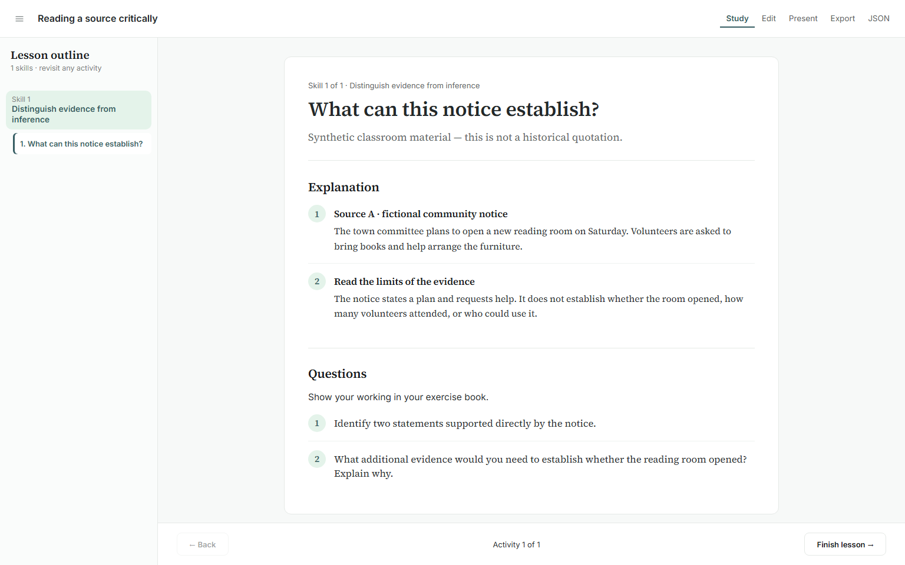
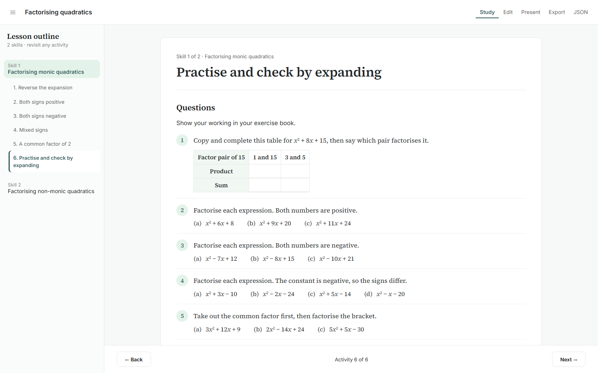

Connected activity authoring
Presentation baseline: PR #155, 9497f91. These are actual browser captures. The two-skill lesson was built from blank through visible controls, downloaded as JSON, reopened, edited again and published independently.
Open authored learner lesson · Download editable JSON · Current authoring coverage · Reproduction and limitations · Capture provenance and assertions
Recorded construction
Initial construction through JSON export. The screenshots below also show reopening, nested edits and independent publication. Test video URLs were cleared; teacher videos and provider playback remain outstanding.
Matched presentation corrections
Single-example heading
Supporting table and reasoning
Answer placement
Singular skill label

Before — merged shared surfacesAfter — bounded correctionPaper practice

Before — merged shared surfacesAfter — bounded correctionTablet question-reference refinement remains deferred. This review does not assert teacher acceptance or school-network playback.